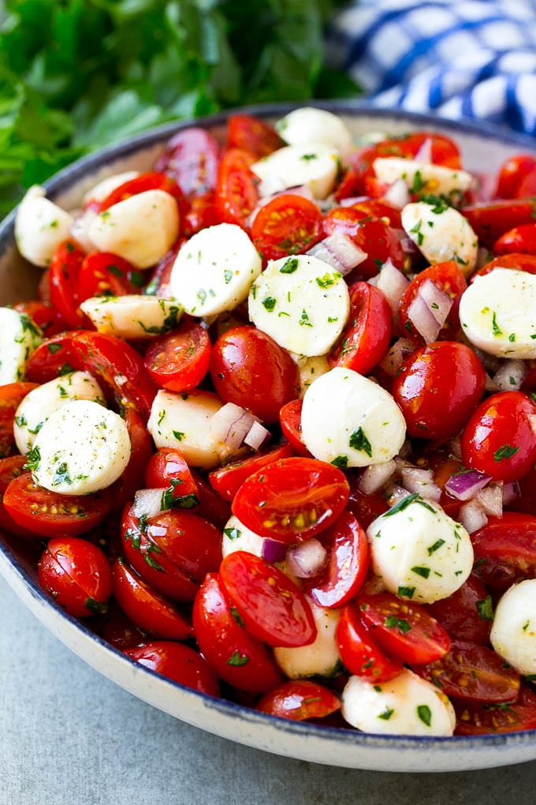

Cherry Caprese Salad

Description
Looking for a quick and easy summer salad? Look no further than Cherry Caprese Salad. This classic Italian dish, with a slight twist, is made with simple ingredients, but it’s packed with flavor and freshness.
Ingredients
- 2 cups cherry tomatoes, halved
- 1 container (about 8 ounces) fresh mozzarella cheese pearls
- 1/2 cup fresh basil leaves, torn
- 1 tablespoon extra virgin olive oil
- 1 tablespoon balsamic vinegar
- Salt and pepper to taste
Steps
- In a large bowl, combine the cherry tomatoes, mozzarella pearls, basil leaves, olive oil, and balsamic vinegar.
- Season with salt and pepper to taste.
- Toss to combine and serve immediately.
Go Back